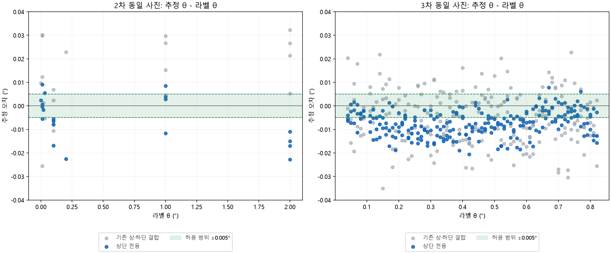

하단을 제외한 상단 전용 θ 보정 비교
2026-11-01 · 동일 학습 40장 · 동일 테스트 254장 · 성공 기준 ±0.005°
82/254 (32.3%) → 86/254 (33.9%)
평균 절대오차 0.009958° → 0.007799°
최대 절대오차 0.035108° → 0.022751°
상단 전용도 실행 실패는 0장이다. 하단 제외만으로 ±0.005° 문제가 해결되지는 않았다.
데이터별 비교
| 데이터 | 방식 | ±0.005° 이내 | 평균 절대오차 (°) | RMSE (°) | 최대 절대오차 (°) | 실행 실패 |
|---|---|---|---|---|---|---|
| 2차 20장 | 기존 상·하단 | 3/20 (15.0%) | 0.016298 | 0.019416 | 0.032207 | 0 |
| 2차 20장 | 상단 전용 | 6/20 (30.0%) | 0.008846 | 0.011098 | 0.022751 | 0 |
| 3차 234장 | 기존 상·하단 | 79/234 (33.8%) | 0.009417 | 0.011739 | 0.035108 | 0 |
| 3차 234장 | 상단 전용 | 80/234 (34.2%) | 0.007710 | 0.009142 | 0.020591 | 0 |
| 전체 254장 | 기존 상·하단 | 82/254 (32.3%) | 0.009958 | 0.012516 | 0.035108 | 0 |
| 전체 254장 | 상단 전용 | 86/254 (33.9%) | 0.007799 | 0.009311 | 0.022751 | 0 |
같은 사진에서 무엇이 달라졌는가
- 절대오차 감소: 142장. 증가: 112장.
- 기존 실패 → 상단 전용 통과: 61장.
- 기존 통과 → 상단 전용 실패: 57장.
- 두 방식 모두 통과: 25장. 두 방식 모두 실패: 111장.
통과 이미지 수가 순증한 것은 4장이다. 기존 통과 사진이 모두 유지되면서 4장만 추가된 결과는 아니다.

회색: 기존 결합. 파란색: 상단 전용. 녹색 띠: ±0.005°. 두 패널은 같은 세로축 범위를 사용한다.
상단 전용의 Y 조건별 결과
| 데이터 | Y 라벨 (mm) | 허용 범위 이내 | 평균 부호 오차 (°) | 최대 절대오차 (°) |
|---|---|---|---|---|
| 2차 | 0 | 1/1 | 0.002293 | 0.002293 |
| 2차 | 0.05 | 1/6 | -0.006378 | 0.017025 |
| 2차 | 0.1 | 2/5 | -0.007151 | 0.022583 |
| 2차 | 0.5 | 2/4 | -0.007107 | 0.016844 |
| 2차 | 1 | 0/4 | -0.002901 | 0.022751 |
| 3차 | 0.05 | 80/234 | -0.007401 | 0.020591 |
구간마다 θ 구성이 달라 Y만의 영향으로 해석하지 않는다. 상단 전용 전체의 평균 부호 오차는 -0.007258°다.
정확히 무엇을 바꿨는가
상단 경계점 추출과 Huber 직선 피팅은 기존 소스를 그대로 재사용했다. 254장 모두에서 상단 측정 출력이 기존과 정확히 같았다.
| 항목 | 기존 | 상단 전용 |
|---|---|---|
| 측정 특징 | 상단·하단 영상 각도 | 상단 영상 각도만 |
| 환산식 | 상·하단 φ = b + aY×Y + aθ×θ | 상단 φ = b + a×θ |
| 추정 | 두 식을 풀어 Y·θ 추정 | θ = (φ − b) / a |
| Y 영향 처리 | 내부 Y 추정으로 분리 시도 | 별도 보정 없음, Y 라벨 미사용 |
상단 각도 하나로 미지수 Y와 θ를 동시에 풀 수 없으므로 환산식을 함께 변경했다. 기존과 동일한 학습용 40장으로 상단 전용 계수만 다시 계산했다.
b = 0.27101545388280657a = -0.088292751046802759
상단 ROI, 가림 범위, Sobel, 일반 Huber, 학습·테스트 이미지 구분, θ 목표 0°, ±0.005° 기준은 유지했다. 테스트 후 계수 수정은 하지 않았다.
하단이 원인이라고 볼 수 있는가
상단 전용 모델이 기존 결합 모델보다 평균·최대 오차가 작았다는 것은 확인했다. 그러나 통과율은 32.3%에서 33.9%로 조금 올랐고, 112장은 절대오차가 더 커졌다.
하단 특징 제거와 함께 Y·θ 환산 구조도 바뀌었으므로, 개선분 전체를 하단 경계점 추출 오류 때문이라고 단정할 수 없다. 이 비교는 현재 두 모델의 성능 차이를 보여준다.
하단을 전혀 사용하지 않는지는 별도로 확인했다. 학습 이미지 복사본에서 상단 영역 아래를 검정/흰색으로 바꾸어도 상단 기울기와 보정치가 동일했고, 새 실행 파일은 하단 추정 코드를 링크하지 않는다.
사진별 결과
데이터 상단 전용 결과
| ID | 데이터 | Y (mm) | θ 라벨 (°) | 기존 오차 (°) | 상단 전용 오차 (°) | 절대오차 | 상단 전용 결과 | 파일 |
|---|---|---|---|---|---|---|---|---|
| D2_005 | 2차 | 0.05 | 0.01 | 0.029754 | -0.005495 | 감소 | 범위 초과 | 일부 데이터 추출/Y+0.05 T+0.01/Y+0.05 T+0.01 (3).bmp |
| D2_008 | 2차 | 0.05 | 0.02 | 0.001300 | -0.001650 | 증가 | 통과 | 일부 데이터 추출/Y+0.05 T+0.02/Y+0.05 T+0.02 (3).bmp |
| D2_011 | 2차 | 0.05 | 0.03 | -0.005432 | 0.005500 | 증가 | 범위 초과 | 일부 데이터 추출/Y+0.05 T+0.03/Y+0.05 T+0.03 (3).bmp |
| D2_014 | 2차 | 0.05 | 0.1 | 0.002346 | -0.007959 | 증가 | 범위 초과 | 일부 데이터 추출/Y+0.05 T+0.10/Y+0.05 T+0.10 (3).bmp |
| D2_017 | 2차 | 0.05 | 1 | 0.004510 | -0.011637 | 증가 | 범위 초과 | 일부 데이터 추출/Y+0.05 T+1.00/Y+0.05 T+1.00 (3).bmp |
| D2_020 | 2차 | 0.05 | 2 | 0.026537 | -0.017025 | 감소 | 범위 초과 | 일부 데이터 추출/Y+0.05 T+2.00/Y+0.05 T+2.00 (3).bmp |
| D2_023 | 2차 | 0.1 | 0.01 | 0.012347 | -0.000406 | 감소 | 통과 | 일부 데이터 추출/Y+0.10 T+0.01/Y+0.1 T+0.01 (3).bmp |
| D2_024 | 2차 | 0 | 0 | 0.009647 | 0.002293 | 감소 | 통과 | 일부 데이터 추출/기준 위치/center3.bmp |
| D2_027 | 2차 | 0.1 | 0.1 | -0.007654 | -0.005625 | 감소 | 범위 초과 | 일부 데이터 추출/Y+0.10 T+0.10/Y+0.1 T+0.1 (3).bmp |
| D2_030 | 2차 | 0.1 | 0.2 | 0.022861 | -0.022583 | 감소 | 범위 초과 | 일부 데이터 추출/Y+0.10 T+0.20/Y+0.1 T+0.2 (3).bmp |
| D2_033 | 2차 | 0.1 | 1 | 0.029665 | 0.003799 | 감소 | 통과 | 일부 데이터 추출/Y+0.10 T+1.00/Y+0.1 T+1.0 (3).bmp |
| D2_036 | 2차 | 0.1 | 2 | 0.021364 | -0.010942 | 감소 | 범위 초과 | 일부 데이터 추출/Y+0.10 T+2.00/Y+0.1 T+2.0 (3).bmp |
| D2_039 | 2차 | 0.5 | 0.01 | -0.025583 | 0.000565 | 감소 | 통과 | 일부 데이터 추출/Y+0.50 T+0.01/Y+0.50 T+0.01 (3).bmp |
| D2_042 | 2차 | 0.5 | 0.1 | -0.010604 | -0.016844 | 증가 | 범위 초과 | 일부 데이터 추출/Y+0.50 T+0.10/Y+0.50 T+0.10 (3).bmp |
| D2_045 | 2차 | 0.5 | 1 | 0.015264 | 0.002839 | 감소 | 통과 | 일부 데이터 추출/Y+0.50 T+1.00/Y+0.50 T+1.00 (3).bmp |
| D2_048 | 2차 | 0.5 | 2 | 0.032207 | -0.014990 | 감소 | 범위 초과 | 일부 데이터 추출/Y+0.50 T+2.00/Y+0.50 T+2.00 (3).bmp |
| D2_051 | 2차 | 1 | 0.01 | 0.030112 | 0.009045 | 감소 | 범위 초과 | 일부 데이터 추출/Y+1.00 T+0.01/Y+1.00 T+0.01 (3).bmp |
| D2_054 | 2차 | 1 | 0.1 | 0.006872 | -0.006435 | 감소 | 범위 초과 | 일부 데이터 추출/Y+1.00 T+0.10/Y+1.00 T+0.10 (3).bmp |
| D2_057 | 2차 | 1 | 1 | 0.026679 | 0.008537 | 감소 | 범위 초과 | 일부 데이터 추출/Y+1.00 T+1.00/Y+1.00 T+1.00 (3).bmp |
| D2_060 | 2차 | 1 | 2 | 0.005230 | -0.022751 | 증가 | 범위 초과 | 일부 데이터 추출/Y+1.00 T+2.00/Y+1.00 T+2.00 (3).bmp |
| D3_001 | 3차 | 0.05 | 0.04 | -0.006481 | -0.004059 | 감소 | 통과 | Y+0.05 T+0.04\Y+0.05 T+0.04 (1).bmp |
| D3_002 | 3차 | 0.05 | 0.04 | -0.001155 | -0.005514 | 증가 | 범위 초과 | Y+0.05 T+0.04\Y+0.05 T+0.04 (2).bmp |
| D3_003 | 3차 | 0.05 | 0.04 | 0.020323 | -0.006285 | 감소 | 범위 초과 | Y+0.05 T+0.04\Y+0.05 T+0.04 (3).bmp |
| D3_004 | 3차 | 0.05 | 0.05 | -0.005740 | -0.007225 | 증가 | 범위 초과 | Y+0.05 T+0.05\Y+0.05 T+0.05 (1).bmp |
| D3_005 | 3차 | 0.05 | 0.05 | 0.000470 | -0.002391 | 증가 | 통과 | Y+0.05 T+0.05\Y+0.05 T+0.05 (2).bmp |
| D3_006 | 3차 | 0.05 | 0.05 | -0.015705 | 0.000563 | 감소 | 통과 | Y+0.05 T+0.05\Y+0.05 T+0.05 (3).bmp |
| D3_007 | 3차 | 0.05 | 0.06 | 0.002623 | -0.007370 | 증가 | 범위 초과 | Y+0.05 T+0.06\Y+0.05 T+0.06 (1).bmp |
| D3_008 | 3차 | 0.05 | 0.06 | -0.019306 | -0.001834 | 감소 | 통과 | Y+0.05 T+0.06\Y+0.05 T+0.06 (2).bmp |
| D3_009 | 3차 | 0.05 | 0.06 | 0.009417 | 0.001565 | 감소 | 통과 | Y+0.05 T+0.06\Y+0.05 T+0.06 (3).bmp |
| D3_010 | 3차 | 0.05 | 0.07 | -0.008786 | -0.003285 | 감소 | 통과 | Y+0.05 T+0.07\Y+0.05 T+0.07 (1).bmp |
| D3_011 | 3차 | 0.05 | 0.07 | -0.011347 | 0.000517 | 감소 | 통과 | Y+0.05 T+0.07\Y+0.05 T+0.07 (2).bmp |
| D3_012 | 3차 | 0.05 | 0.07 | 0.017822 | -0.011310 | 감소 | 범위 초과 | Y+0.05 T+0.07\Y+0.05 T+0.07 (3).bmp |
| D3_013 | 3차 | 0.05 | 0.08 | -0.012736 | -0.003485 | 감소 | 통과 | Y+0.05 T+0.08\Y+0.05 T+0.08 (1).bmp |
| D3_014 | 3차 | 0.05 | 0.08 | -0.004824 | -0.005482 | 증가 | 범위 초과 | Y+0.05 T+0.08\Y+0.05 T+0.08 (2).bmp |
| D3_015 | 3차 | 0.05 | 0.08 | -0.009539 | -0.003072 | 감소 | 통과 | Y+0.05 T+0.08\Y+0.05 T+0.08 (3).bmp |
| D3_016 | 3차 | 0.05 | 0.09 | -0.000749 | -0.002016 | 증가 | 통과 | Y+0.05 T+0.09\Y+0.05 T+0.09 (1).bmp |
| D3_017 | 3차 | 0.05 | 0.09 | -0.005418 | -0.004659 | 감소 | 통과 | Y+0.05 T+0.09\Y+0.05 T+0.09 (2).bmp |
| D3_018 | 3차 | 0.05 | 0.09 | -0.012126 | -0.002179 | 감소 | 통과 | Y+0.05 T+0.09\Y+0.05 T+0.09 (3).bmp |
| D3_019 | 3차 | 0.05 | 0.11 | -0.002128 | -0.011049 | 증가 | 범위 초과 | Y+0.05 T+0.11\Y+0.05 T+0.11 (1).bmp |
| D3_020 | 3차 | 0.05 | 0.11 | 0.008059 | -0.006770 | 감소 | 범위 초과 | Y+0.05 T+0.11\Y+0.05 T+0.11 (2).bmp |
| D3_021 | 3차 | 0.05 | 0.11 | 0.005200 | -0.004135 | 감소 | 통과 | Y+0.05 T+0.11\Y+0.05 T+0.11 (3).bmp |
| D3_022 | 3차 | 0.05 | 0.12 | -0.000598 | -0.014401 | 증가 | 범위 초과 | Y+0.05 T+0.12\Y+0.05 T+0.12 (1).bmp |
| D3_023 | 3차 | 0.05 | 0.12 | -0.007104 | -0.001603 | 감소 | 통과 | Y+0.05 T+0.12\Y+0.05 T+0.12 (2).bmp |
| D3_024 | 3차 | 0.05 | 0.12 | -0.001345 | -0.005208 | 증가 | 범위 초과 | Y+0.05 T+0.12\Y+0.05 T+0.12 (3).bmp |
| D3_025 | 3차 | 0.05 | 0.13 | -0.004618 | -0.009944 | 증가 | 범위 초과 | Y+0.05 T+0.13\Y+0.05 T+0.13 (1).bmp |
| D3_026 | 3차 | 0.05 | 0.13 | 0.001676 | -0.005199 | 증가 | 범위 초과 | Y+0.05 T+0.13\Y+0.05 T+0.13 (2).bmp |
| D3_027 | 3차 | 0.05 | 0.13 | -0.009984 | -0.014232 | 증가 | 범위 초과 | Y+0.05 T+0.13\Y+0.05 T+0.13 (3).bmp |
| D3_028 | 3차 | 0.05 | 0.14 | -0.007721 | -0.013384 | 증가 | 범위 초과 | Y+0.05 T+0.14\Y+0.05 T+0.14 (1).bmp |
| D3_029 | 3차 | 0.05 | 0.14 | 0.013703 | -0.004315 | 감소 | 통과 | Y+0.05 T+0.14\Y+0.05 T+0.14 (2).bmp |
| D3_030 | 3차 | 0.05 | 0.14 | 0.021837 | -0.007873 | 감소 | 범위 초과 | Y+0.05 T+0.14\Y+0.05 T+0.14 (3).bmp |
| D3_031 | 3차 | 0.05 | 0.15 | -0.035108 | -0.009450 | 감소 | 범위 초과 | Y+0.05 T+0.15\Y+0.05 T+0.15 (1).bmp |
| D3_032 | 3차 | 0.05 | 0.15 | 0.002832 | -0.005091 | 증가 | 범위 초과 | Y+0.05 T+0.15\Y+0.05 T+0.15 (2).bmp |
| D3_033 | 3차 | 0.05 | 0.15 | 0.007249 | -0.002048 | 감소 | 통과 | Y+0.05 T+0.15\Y+0.05 T+0.15 (3).bmp |
| D3_034 | 3차 | 0.05 | 0.16 | -0.003625 | -0.012251 | 증가 | 범위 초과 | Y+0.05 T+0.16\Y+0.05 T+0.16 (1).bmp |
| D3_035 | 3차 | 0.05 | 0.16 | 0.003320 | -0.007333 | 증가 | 범위 초과 | Y+0.05 T+0.16\Y+0.05 T+0.16 (2).bmp |
| D3_036 | 3차 | 0.05 | 0.16 | 0.009180 | -0.009319 | 증가 | 범위 초과 | Y+0.05 T+0.16\Y+0.05 T+0.16 (3).bmp |
| D3_037 | 3차 | 0.05 | 0.17 | -0.010602 | -0.010362 | 감소 | 범위 초과 | Y+0.05 T+0.17\Y+0.05 T+0.17 (1).bmp |
| D3_038 | 3차 | 0.05 | 0.17 | -0.003131 | 0.001359 | 감소 | 통과 | Y+0.05 T+0.17\Y+0.05 T+0.17 (2).bmp |
| D3_039 | 3차 | 0.05 | 0.17 | 0.011396 | -0.017085 | 증가 | 범위 초과 | Y+0.05 T+0.17\Y+0.05 T+0.17 (3).bmp |
| D3_040 | 3차 | 0.05 | 0.18 | -0.000345 | -0.012906 | 증가 | 범위 초과 | Y+0.05 T+0.18\Y+0.05 T+0.18 (1).bmp |
| D3_041 | 3차 | 0.05 | 0.18 | -0.025984 | -0.009178 | 감소 | 범위 초과 | Y+0.05 T+0.18\Y+0.05 T+0.18 (2).bmp |
| D3_042 | 3차 | 0.05 | 0.18 | -0.018355 | -0.000217 | 감소 | 통과 | Y+0.05 T+0.18\Y+0.05 T+0.18 (3).bmp |
| D3_043 | 3차 | 0.05 | 0.19 | 0.000827 | -0.013467 | 증가 | 범위 초과 | Y+0.05 T+0.19\Y+0.05 T+0.19 (1).bmp |
| D3_044 | 3차 | 0.05 | 0.19 | -0.018313 | -0.007754 | 감소 | 범위 초과 | Y+0.05 T+0.19\Y+0.05 T+0.19 (2).bmp |
| D3_045 | 3차 | 0.05 | 0.19 | -0.010589 | -0.018840 | 증가 | 범위 초과 | Y+0.05 T+0.19\Y+0.05 T+0.19 (3).bmp |
| D3_046 | 3차 | 0.05 | 0.2 | 0.007702 | -0.010999 | 증가 | 범위 초과 | Y+0.05 T+0.20\Y+0.05 T+0.20 (1).bmp |
| D3_047 | 3차 | 0.05 | 0.2 | -0.003484 | -0.008957 | 증가 | 범위 초과 | Y+0.05 T+0.20\Y+0.05 T+0.20 (2).bmp |
| D3_048 | 3차 | 0.05 | 0.2 | 0.002553 | -0.002994 | 증가 | 통과 | Y+0.05 T+0.20\Y+0.05 T+0.20 (3).bmp |
| D3_049 | 3차 | 0.05 | 0.21 | -0.008053 | -0.012535 | 증가 | 범위 초과 | Y+0.05 T+0.21\Y+0.05 T+0.21 (1).bmp |
| D3_050 | 3차 | 0.05 | 0.21 | -0.007471 | -0.007826 | 증가 | 범위 초과 | Y+0.05 T+0.21\Y+0.05 T+0.21 (2).bmp |
| D3_051 | 3차 | 0.05 | 0.21 | -0.014650 | -0.006986 | 감소 | 범위 초과 | Y+0.05 T+0.21\Y+0.05 T+0.21 (3).bmp |
| D3_052 | 3차 | 0.05 | 0.22 | -0.002005 | -0.004566 | 증가 | 통과 | Y+0.05 T+0.22\Y+0.05 T+0.22 (1).bmp |
| D3_053 | 3차 | 0.05 | 0.22 | 0.004433 | -0.003898 | 감소 | 통과 | Y+0.05 T+0.22\Y+0.05 T+0.22 (2).bmp |
| D3_054 | 3차 | 0.05 | 0.22 | -0.014781 | -0.005519 | 감소 | 범위 초과 | Y+0.05 T+0.22\Y+0.05 T+0.22 (3).bmp |
| D3_055 | 3차 | 0.05 | 0.23 | -0.011488 | -0.013363 | 증가 | 범위 초과 | Y+0.05 T+0.23\Y+0.05 T+0.23 (1).bmp |
| D3_056 | 3차 | 0.05 | 0.23 | 0.000677 | -0.013740 | 증가 | 범위 초과 | Y+0.05 T+0.23\Y+0.05 T+0.23 (2).bmp |
| D3_057 | 3차 | 0.05 | 0.23 | -0.022664 | -0.010372 | 감소 | 범위 초과 | Y+0.05 T+0.23\Y+0.05 T+0.23 (3).bmp |
| D3_058 | 3차 | 0.05 | 0.24 | -0.009459 | -0.011645 | 증가 | 범위 초과 | Y+0.05 T+0.24\Y+0.05 T+0.24 (1).bmp |
| D3_059 | 3차 | 0.05 | 0.24 | -0.021328 | -0.015595 | 감소 | 범위 초과 | Y+0.05 T+0.24\Y+0.05 T+0.24 (2).bmp |
| D3_060 | 3차 | 0.05 | 0.24 | -0.011882 | -0.009410 | 감소 | 범위 초과 | Y+0.05 T+0.24\Y+0.05 T+0.24 (3).bmp |
| D3_061 | 3차 | 0.05 | 0.25 | -0.009224 | -0.004795 | 감소 | 통과 | Y+0.05 T+0.25\Y+0.05 T+0.25 (1).bmp |
| D3_062 | 3차 | 0.05 | 0.25 | -0.006333 | -0.008300 | 증가 | 범위 초과 | Y+0.05 T+0.25\Y+0.05 T+0.25 (2).bmp |
| D3_063 | 3차 | 0.05 | 0.25 | 0.000090 | -0.006243 | 증가 | 범위 초과 | Y+0.05 T+0.25\Y+0.05 T+0.25 (3).bmp |
| D3_064 | 3차 | 0.05 | 0.26 | 0.008672 | -0.013937 | 증가 | 범위 초과 | Y+0.05 T+0.26\Y+0.05 T+0.26 (1).bmp |
| D3_065 | 3차 | 0.05 | 0.26 | 0.008383 | -0.015902 | 증가 | 범위 초과 | Y+0.05 T+0.26\Y+0.05 T+0.26 (2).bmp |
| D3_066 | 3차 | 0.05 | 0.26 | -0.000309 | -0.011546 | 증가 | 범위 초과 | Y+0.05 T+0.26\Y+0.05 T+0.26 (3).bmp |
| D3_067 | 3차 | 0.05 | 0.27 | -0.006218 | -0.014590 | 증가 | 범위 초과 | Y+0.05 T+0.27\Y+0.05 T+0.27 (1).bmp |
| D3_068 | 3차 | 0.05 | 0.27 | 0.004888 | -0.008619 | 증가 | 범위 초과 | Y+0.05 T+0.27\Y+0.05 T+0.27 (2).bmp |
| D3_069 | 3차 | 0.05 | 0.27 | -0.008803 | -0.013065 | 증가 | 범위 초과 | Y+0.05 T+0.27\Y+0.05 T+0.27 (3).bmp |
| D3_070 | 3차 | 0.05 | 0.28 | -0.009355 | -0.009967 | 증가 | 범위 초과 | Y+0.05 T+0.28\Y+0.05 T+0.28 (1).bmp |
| D3_071 | 3차 | 0.05 | 0.28 | -0.001661 | -0.010256 | 증가 | 범위 초과 | Y+0.05 T+0.28\Y+0.05 T+0.28 (2).bmp |
| D3_072 | 3차 | 0.05 | 0.28 | 0.009484 | -0.001804 | 감소 | 통과 | Y+0.05 T+0.28\Y+0.05 T+0.28 (3).bmp |
| D3_073 | 3차 | 0.05 | 0.29 | -0.002985 | -0.017019 | 증가 | 범위 초과 | Y+0.05 T+0.29\Y+0.05 T+0.29 (1).bmp |
| D3_074 | 3차 | 0.05 | 0.29 | -0.011381 | -0.011003 | 감소 | 범위 초과 | Y+0.05 T+0.29\Y+0.05 T+0.29 (2).bmp |
| D3_075 | 3차 | 0.05 | 0.29 | -0.008927 | -0.015608 | 증가 | 범위 초과 | Y+0.05 T+0.29\Y+0.05 T+0.29 (3).bmp |
| D3_076 | 3차 | 0.05 | 0.3 | -0.000105 | -0.010407 | 증가 | 범위 초과 | Y+0.05 T+0.30\Y+0.05 T+0.30 (1).bmp |
| D3_077 | 3차 | 0.05 | 0.3 | -0.012122 | -0.001814 | 감소 | 통과 | Y+0.05 T+0.30\Y+0.05 T+0.30 (2).bmp |
| D3_078 | 3차 | 0.05 | 0.3 | -0.021074 | -0.003966 | 감소 | 통과 | Y+0.05 T+0.30\Y+0.05 T+0.30 (3).bmp |
| D3_079 | 3차 | 0.05 | 0.31 | 0.011301 | -0.016307 | 증가 | 범위 초과 | Y+0.05 T+0.31\Y+0.05 T+0.31 (1).bmp |
| D3_080 | 3차 | 0.05 | 0.31 | -0.024271 | -0.005590 | 감소 | 범위 초과 | Y+0.05 T+0.31\Y+0.05 T+0.31 (2).bmp |
| D3_081 | 3차 | 0.05 | 0.31 | 0.010865 | -0.015686 | 증가 | 범위 초과 | Y+0.05 T+0.31\Y+0.05 T+0.31 (3).bmp |
| D3_082 | 3차 | 0.05 | 0.32 | -0.019181 | -0.008883 | 감소 | 범위 초과 | Y+0.05 T+0.32\Y+0.05 T+0.32 (1).bmp |
| D3_083 | 3차 | 0.05 | 0.32 | -0.003223 | -0.012652 | 증가 | 범위 초과 | Y+0.05 T+0.32\Y+0.05 T+0.32 (2).bmp |
| D3_084 | 3차 | 0.05 | 0.32 | 0.003839 | -0.004707 | 증가 | 통과 | Y+0.05 T+0.32\Y+0.05 T+0.33 (3).bmp |
| D3_085 | 3차 | 0.05 | 0.33 | 0.001232 | -0.013268 | 증가 | 범위 초과 | Y+0.05 T+0.33\Y+0.05 T+0.33 (1).bmp |
| D3_086 | 3차 | 0.05 | 0.33 | 0.006134 | -0.003739 | 감소 | 통과 | Y+0.05 T+0.33\Y+0.05 T+0.33 (2).bmp |
| D3_087 | 3차 | 0.05 | 0.33 | -0.006585 | -0.010002 | 증가 | 범위 초과 | Y+0.05 T+0.33\Y+0.05 T+0.33 (3).bmp |
| D3_088 | 3차 | 0.05 | 0.34 | 0.005814 | -0.008786 | 증가 | 범위 초과 | Y+0.05 T+0.34\Y+0.05 T+0.34 (1).bmp |
| D3_089 | 3차 | 0.05 | 0.34 | -0.012828 | -0.015029 | 증가 | 범위 초과 | Y+0.05 T+0.34\Y+0.05 T+0.34 (2).bmp |
| D3_090 | 3차 | 0.05 | 0.34 | -0.011771 | -0.014024 | 증가 | 범위 초과 | Y+0.05 T+0.34\Y+0.05 T+0.34 (3).bmp |
| D3_091 | 3차 | 0.05 | 0.35 | -0.010383 | -0.012649 | 증가 | 범위 초과 | Y+0.05 T+0.35\Y+0.05 T+0.35 (1).bmp |
| D3_092 | 3차 | 0.05 | 0.35 | -0.006223 | -0.007294 | 증가 | 범위 초과 | Y+0.05 T+0.35\Y+0.05 T+0.35 (2).bmp |
| D3_093 | 3차 | 0.05 | 0.35 | -0.008743 | -0.014244 | 증가 | 범위 초과 | Y+0.05 T+0.35\Y+0.05 T+0.35 (3).bmp |
| D3_094 | 3차 | 0.05 | 0.36 | 0.005007 | -0.013261 | 증가 | 범위 초과 | Y+0.05 T+0.36\Y+0.05 T+0.36 (1).bmp |
| D3_095 | 3차 | 0.05 | 0.36 | 0.003349 | -0.010652 | 증가 | 범위 초과 | Y+0.05 T+0.36\Y+0.05 T+0.36 (2).bmp |
| D3_096 | 3차 | 0.05 | 0.36 | -0.000665 | -0.006731 | 증가 | 범위 초과 | Y+0.05 T+0.36\Y+0.05 T+0.36 (3).bmp |
| D3_097 | 3차 | 0.05 | 0.37 | -0.016640 | -0.010037 | 감소 | 범위 초과 | Y+0.05 T+0.37\Y+0.05 T+0.37 (1).bmp |
| D3_098 | 3차 | 0.05 | 0.37 | -0.014559 | -0.015287 | 증가 | 범위 초과 | Y+0.05 T+0.37\Y+0.05 T+0.37 (2).bmp |
| D3_099 | 3차 | 0.05 | 0.37 | -0.004362 | -0.002519 | 감소 | 통과 | Y+0.05 T+0.37\Y+0.05 T+0.37 (3).bmp |
| D3_100 | 3차 | 0.05 | 0.38 | 0.006115 | -0.002912 | 감소 | 통과 | Y+0.05 T+0.38\Y+0.05 T+0.38 (1).bmp |
| D3_101 | 3차 | 0.05 | 0.38 | 0.001780 | -0.015307 | 증가 | 범위 초과 | Y+0.05 T+0.38\Y+0.05 T+0.38 (2).bmp |
| D3_102 | 3차 | 0.05 | 0.38 | -0.003855 | -0.003384 | 감소 | 통과 | Y+0.05 T+0.38\Y+0.05 T+0.38 (3).bmp |
| D3_103 | 3차 | 0.05 | 0.39 | -0.015045 | -0.000349 | 감소 | 통과 | Y+0.05 T+0.39\Y+0.05 T+0.39 (1).bmp |
| D3_104 | 3차 | 0.05 | 0.39 | -0.004429 | -0.018915 | 증가 | 범위 초과 | Y+0.05 T+0.39\Y+0.05 T+0.39 (2).bmp |
| D3_105 | 3차 | 0.05 | 0.39 | -0.010083 | -0.011936 | 증가 | 범위 초과 | Y+0.05 T+0.39\Y+0.05 T+0.39 (3).bmp |
| D3_106 | 3차 | 0.05 | 0.4 | -0.014537 | -0.004447 | 감소 | 통과 | Y+0.05 T+0.40\Y+0.05 T+0.40 (1).bmp |
| D3_107 | 3차 | 0.05 | 0.4 | 0.016135 | -0.000658 | 감소 | 통과 | Y+0.05 T+0.40\Y+0.05 T+0.40 (2).bmp |
| D3_108 | 3차 | 0.05 | 0.4 | 0.006513 | -0.005174 | 감소 | 범위 초과 | Y+0.05 T+0.40\Y+0.05 T+0.40 (3).bmp |
| D3_109 | 3차 | 0.05 | 0.41 | -0.014313 | -0.009049 | 감소 | 범위 초과 | Y+0.05 T+0.41\Y+0.05 T+0.41 (1).bmp |
| D3_110 | 3차 | 0.05 | 0.41 | -0.000091 | -0.012290 | 증가 | 범위 초과 | Y+0.05 T+0.41\Y+0.05 T+0.41 (2).bmp |
| D3_111 | 3차 | 0.05 | 0.41 | -0.026213 | -0.012161 | 감소 | 범위 초과 | Y+0.05 T+0.41\Y+0.05 T+0.41 (3).bmp |
| D3_112 | 3차 | 0.05 | 0.42 | -0.016145 | -0.020591 | 증가 | 범위 초과 | Y+0.05 T+0.42\Y+0.05 T+0.42 (1).bmp |
| D3_113 | 3차 | 0.05 | 0.42 | -0.015648 | -0.008009 | 감소 | 범위 초과 | Y+0.05 T+0.42\Y+0.05 T+0.42 (2).bmp |
| D3_114 | 3차 | 0.05 | 0.42 | -0.015788 | -0.013860 | 감소 | 범위 초과 | Y+0.05 T+0.42\Y+0.05 T+0.42 (3).bmp |
| D3_115 | 3차 | 0.05 | 0.43 | -0.026649 | -0.008845 | 감소 | 범위 초과 | Y+0.05 T+0.43\Y+0.05 T+0.43 (1).bmp |
| D3_116 | 3차 | 0.05 | 0.43 | -0.017087 | -0.009482 | 감소 | 범위 초과 | Y+0.05 T+0.43\Y+0.05 T+0.43 (2).bmp |
| D3_117 | 3차 | 0.05 | 0.43 | 0.001478 | -0.010840 | 증가 | 범위 초과 | Y+0.05 T+0.43\Y+0.05 T+0.43 (3).bmp |
| D3_118 | 3차 | 0.05 | 0.44 | 0.008052 | -0.007542 | 감소 | 범위 초과 | Y+0.05 T+0.44\Y+0.05 T+0.44 (1).bmp |
| D3_119 | 3차 | 0.05 | 0.44 | -0.010085 | 0.001379 | 감소 | 통과 | Y+0.05 T+0.44\Y+0.05 T+0.44 (2).bmp |
| D3_120 | 3차 | 0.05 | 0.44 | -0.008898 | 0.000147 | 감소 | 통과 | Y+0.05 T+0.44\Y+0.05 T+0.44 (3).bmp |
| D3_121 | 3차 | 0.05 | 0.45 | -0.002672 | -0.015105 | 증가 | 범위 초과 | Y+0.05 T+0.45\Y+0.05 T+0.45 (1).bmp |
| D3_122 | 3차 | 0.05 | 0.45 | 0.001193 | -0.001133 | 감소 | 통과 | Y+0.05 T+0.45\Y+0.05 T+0.45 (2).bmp |
| D3_123 | 3차 | 0.05 | 0.45 | -0.009885 | -0.010650 | 증가 | 범위 초과 | Y+0.05 T+0.45\Y+0.05 T+0.45 (3).bmp |
| D3_124 | 3차 | 0.05 | 0.46 | -0.014761 | -0.011123 | 감소 | 범위 초과 | Y+0.05 T+0.46\Y+0.05 T+0.46 (1).bmp |
| D3_125 | 3차 | 0.05 | 0.46 | 0.004628 | -0.003113 | 감소 | 통과 | Y+0.05 T+0.46\Y+0.05 T+0.46 (2).bmp |
| D3_126 | 3차 | 0.05 | 0.46 | 0.013756 | -0.009390 | 감소 | 범위 초과 | Y+0.05 T+0.46\Y+0.05 T+0.46 (3).bmp |
| D3_127 | 3차 | 0.05 | 0.47 | 0.002977 | -0.010236 | 증가 | 범위 초과 | Y+0.05 T+0.47\Y+0.05 T+0.47 (1).bmp |
| D3_128 | 3차 | 0.05 | 0.47 | -0.010990 | -0.007356 | 감소 | 범위 초과 | Y+0.05 T+0.47\Y+0.05 T+0.47 (2).bmp |
| D3_129 | 3차 | 0.05 | 0.47 | 0.003480 | -0.009690 | 증가 | 범위 초과 | Y+0.05 T+0.47\Y+0.05 T+0.47 (3).bmp |
| D3_130 | 3차 | 0.05 | 0.48 | -0.021055 | -0.007309 | 감소 | 범위 초과 | Y+0.05 T+0.48\Y+0.05 T+0.48 (1).bmp |
| D3_131 | 3차 | 0.05 | 0.48 | 0.006986 | -0.004302 | 감소 | 통과 | Y+0.05 T+0.48\Y+0.05 T+0.48 (2).bmp |
| D3_132 | 3차 | 0.05 | 0.48 | 0.001523 | -0.005544 | 증가 | 범위 초과 | Y+0.05 T+0.48\Y+0.05 T+0.48 (3).bmp |
| D3_133 | 3차 | 0.05 | 0.49 | 0.003752 | -0.005053 | 증가 | 범위 초과 | Y+0.05 T+0.49\Y+0.05 T+0.49 (1).bmp |
| D3_134 | 3차 | 0.05 | 0.49 | -0.000127 | -0.011488 | 증가 | 범위 초과 | Y+0.05 T+0.49\Y+0.05 T+0.49 (2).bmp |
| D3_135 | 3차 | 0.05 | 0.49 | -0.022897 | -0.009000 | 감소 | 범위 초과 | Y+0.05 T+0.49\Y+0.05 T+0.49 (3).bmp |
| D3_136 | 3차 | 0.05 | 0.5 | -0.005327 | -0.009663 | 증가 | 범위 초과 | Y+0.05 T+0.50\Y+0.05 T+0.50 (1).bmp |
| D3_137 | 3차 | 0.05 | 0.5 | 0.012735 | -0.009353 | 감소 | 범위 초과 | Y+0.05 T+0.50\Y+0.05 T+0.50 (2).bmp |
| D3_138 | 3차 | 0.05 | 0.5 | -0.004855 | -0.005644 | 증가 | 범위 초과 | Y+0.05 T+0.50\Y+0.05 T+0.50 (3).bmp |
| D3_139 | 3차 | 0.05 | 0.51 | -0.000153 | -0.018336 | 증가 | 범위 초과 | Y+0.05 T+0.51\Y+0.05 T+0.51 (1).bmp |
| D3_140 | 3차 | 0.05 | 0.51 | -0.003760 | -0.007977 | 증가 | 범위 초과 | Y+0.05 T+0.51\Y+0.05 T+0.51 (2).bmp |
| D3_141 | 3차 | 0.05 | 0.51 | -0.009682 | -0.007110 | 감소 | 범위 초과 | Y+0.05 T+0.51\Y+0.05 T+0.51 (3).bmp |
| D3_142 | 3차 | 0.05 | 0.52 | 0.020207 | -0.007840 | 감소 | 범위 초과 | Y+0.05 T+0.52\Y+0.05 T+0.52 (1).bmp |
| D3_143 | 3차 | 0.05 | 0.52 | -0.014444 | -0.017142 | 증가 | 범위 초과 | Y+0.05 T+0.52\Y+0.05 T+0.52 (2).bmp |
| D3_144 | 3차 | 0.05 | 0.52 | 0.000341 | -0.016984 | 증가 | 범위 초과 | Y+0.05 T+0.52\Y+0.05 T+0.52 (3).bmp |
| D3_145 | 3차 | 0.05 | 0.53 | 0.001809 | -0.008659 | 증가 | 범위 초과 | Y+0.05 T+0.53\Y+0.05 T+0.53 (1).bmp |
| D3_146 | 3차 | 0.05 | 0.53 | -0.016020 | -0.005352 | 감소 | 범위 초과 | Y+0.05 T+0.53\Y+0.05 T+0.53 (2).bmp |
| D3_147 | 3차 | 0.05 | 0.53 | 0.001806 | -0.009728 | 증가 | 범위 초과 | Y+0.05 T+0.53\Y+0.05 T+0.53 (3).bmp |
| D3_148 | 3차 | 0.05 | 0.54 | -0.002631 | -0.018199 | 증가 | 범위 초과 | Y+0.05 T+0.54\Y+0.05 T+0.54 (1).bmp |
| D3_149 | 3차 | 0.05 | 0.54 | 0.004161 | 0.002678 | 감소 | 통과 | Y+0.05 T+0.54\Y+0.05 T+0.54 (2).bmp |
| D3_150 | 3차 | 0.05 | 0.54 | 0.014580 | -0.006526 | 감소 | 범위 초과 | Y+0.05 T+0.54\Y+0.05 T+0.54 (3).bmp |
| D3_151 | 3차 | 0.05 | 0.55 | -0.008578 | -0.004205 | 감소 | 통과 | Y+0.05 T+0.55\Y+0.05 T+0.55 (1).bmp |
| D3_152 | 3차 | 0.05 | 0.55 | 0.007657 | -0.007371 | 감소 | 범위 초과 | Y+0.05 T+0.55\Y+0.05 T+0.55 (2).bmp |
| D3_153 | 3차 | 0.05 | 0.55 | -0.016334 | -0.013475 | 감소 | 범위 초과 | Y+0.05 T+0.55\Y+0.05 T+0.55 (3).bmp |
| D3_154 | 3차 | 0.05 | 0.56 | -0.012399 | -0.005360 | 감소 | 범위 초과 | Y+0.05 T+0.56\Y+0.05 T+0.56 (1).bmp |
| D3_155 | 3차 | 0.05 | 0.56 | -0.015104 | -0.010959 | 감소 | 범위 초과 | Y+0.05 T+0.56\Y+0.05 T+0.56 (2).bmp |
| D3_156 | 3차 | 0.05 | 0.56 | -0.025253 | -0.010150 | 감소 | 범위 초과 | Y+0.05 T+0.56\Y+0.05 T+0.56 (3).bmp |
| D3_157 | 3차 | 0.05 | 0.57 | 0.003339 | -0.017742 | 증가 | 범위 초과 | Y+0.05 T+0.57\Y+0.05 T+0.57 (1).bmp |
| D3_158 | 3차 | 0.05 | 0.57 | 0.003004 | -0.004540 | 증가 | 통과 | Y+0.05 T+0.57\Y+0.05 T+0.57 (2).bmp |
| D3_159 | 3차 | 0.05 | 0.57 | -0.004435 | -0.013697 | 증가 | 범위 초과 | Y+0.05 T+0.57\Y+0.05 T+0.57 (3).bmp |
| D3_160 | 3차 | 0.05 | 0.58 | -0.004910 | -0.018469 | 증가 | 범위 초과 | Y+0.05 T+0.58\Y+0.05 T+0.58 (1).bmp |
| D3_161 | 3차 | 0.05 | 0.58 | 0.004796 | -0.008380 | 증가 | 범위 초과 | Y+0.05 T+0.58\Y+0.05 T+0.58 (2).bmp |
| D3_162 | 3차 | 0.05 | 0.58 | -0.014701 | -0.005749 | 감소 | 범위 초과 | Y+0.05 T+0.58\Y+0.05 T+0.58 (3).bmp |
| D3_163 | 3차 | 0.05 | 0.59 | -0.016048 | -0.008363 | 감소 | 범위 초과 | Y+0.05 T+0.59\Y+0.05 T+0.59 (1).bmp |
| D3_164 | 3차 | 0.05 | 0.59 | -0.020709 | -0.005727 | 감소 | 범위 초과 | Y+0.05 T+0.59\Y+0.05 T+0.59 (2).bmp |
| D3_165 | 3차 | 0.05 | 0.59 | -0.009084 | -0.006741 | 감소 | 범위 초과 | Y+0.05 T+0.59\Y+0.05 T+0.59 (3).bmp |
| D3_166 | 3차 | 0.05 | 0.6 | -0.020318 | -0.002427 | 감소 | 통과 | Y+0.05 T+0.60\Y+0.05 T+0.60 (1).bmp |
| D3_167 | 3차 | 0.05 | 0.6 | -0.009496 | -0.003233 | 감소 | 통과 | Y+0.05 T+0.60\Y+0.05 T+0.60 (2).bmp |
| D3_168 | 3차 | 0.05 | 0.6 | -0.017291 | -0.007114 | 감소 | 범위 초과 | Y+0.05 T+0.60\Y+0.05 T+0.60 (3).bmp |
| D3_169 | 3차 | 0.05 | 0.61 | -0.013470 | -0.015436 | 증가 | 범위 초과 | Y+0.05 T+0.61\Y+0.05 T+0.61 (1).bmp |
| D3_170 | 3차 | 0.05 | 0.61 | -0.013039 | -0.009412 | 감소 | 범위 초과 | Y+0.05 T+0.61\Y+0.05 T+0.61 (2).bmp |
| D3_171 | 3차 | 0.05 | 0.61 | -0.021638 | -0.006845 | 감소 | 범위 초과 | Y+0.05 T+0.61\Y+0.05 T+0.61 (3).bmp |
| D3_172 | 3차 | 0.05 | 0.62 | -0.020527 | -0.006856 | 감소 | 범위 초과 | Y+0.05 T+0.62\Y+0.05 T+0.62 (1).bmp |
| D3_173 | 3차 | 0.05 | 0.62 | -0.007980 | -0.001369 | 감소 | 통과 | Y+0.05 T+0.62\Y+0.05 T+0.62 (2).bmp |
| D3_174 | 3차 | 0.05 | 0.62 | -0.008410 | -0.017217 | 증가 | 범위 초과 | Y+0.05 T+0.62\Y+0.05 T+0.62 (3).bmp |
| D3_175 | 3차 | 0.05 | 0.63 | -0.000238 | -0.000130 | 감소 | 통과 | Y+0.05 T+0.63\Y+0.05 T+0.63 (1).bmp |
| D3_176 | 3차 | 0.05 | 0.63 | -0.006390 | -0.000337 | 감소 | 통과 | Y+0.05 T+0.63\Y+0.05 T+0.63 (2).bmp |
| D3_177 | 3차 | 0.05 | 0.63 | -0.003700 | -0.010413 | 증가 | 범위 초과 | Y+0.05 T+0.63\Y+0.05 T+0.63 (3).bmp |
| D3_178 | 3차 | 0.05 | 0.64 | 0.004629 | -0.011086 | 증가 | 범위 초과 | Y+0.05 T+0.64\Y+0.05 T+0.64 (1).bmp |
| D3_179 | 3차 | 0.05 | 0.64 | -0.015384 | 0.003318 | 감소 | 통과 | Y+0.05 T+0.64\Y+0.05 T+0.64 (2).bmp |
| D3_180 | 3차 | 0.05 | 0.64 | -0.001963 | -0.004038 | 증가 | 통과 | Y+0.05 T+0.64\Y+0.05 T+0.64 (3).bmp |
| D3_181 | 3차 | 0.05 | 0.65 | -0.002734 | -0.009172 | 증가 | 범위 초과 | Y+0.05 T+0.65\Y+0.05 T+0.65 (1).bmp |
| D3_182 | 3차 | 0.05 | 0.65 | -0.004375 | -0.000599 | 감소 | 통과 | Y+0.05 T+0.65\Y+0.05 T+0.65 (2).bmp |
| D3_183 | 3차 | 0.05 | 0.65 | 0.007986 | -0.001911 | 감소 | 통과 | Y+0.05 T+0.65\Y+0.05 T+0.65 (3).bmp |
| D3_184 | 3차 | 0.05 | 0.66 | -0.004099 | 0.001732 | 감소 | 통과 | Y+0.05 T+0.66\Y+0.05 T+0.66 (1).bmp |
| D3_185 | 3차 | 0.05 | 0.66 | -0.009629 | -0.001976 | 감소 | 통과 | Y+0.05 T+0.66\Y+0.05 T+0.66 (2).bmp |
| D3_186 | 3차 | 0.05 | 0.66 | 0.002645 | -0.005331 | 증가 | 범위 초과 | Y+0.05 T+0.66\Y+0.05 T+0.66 (3).bmp |
| D3_187 | 3차 | 0.05 | 0.67 | -0.007862 | -0.002345 | 감소 | 통과 | Y+0.05 T+0.67\Y+0.05 T+0.67 (1).bmp |
| D3_188 | 3차 | 0.05 | 0.67 | 0.014250 | 0.007841 | 감소 | 범위 초과 | Y+0.05 T+0.67\Y+0.05 T+0.67 (2).bmp |
| D3_189 | 3차 | 0.05 | 0.67 | -0.002051 | -0.003482 | 증가 | 통과 | Y+0.05 T+0.67\Y+0.05 T+0.67 (3).bmp |
| D3_190 | 3차 | 0.05 | 0.68 | 0.011945 | -0.000681 | 감소 | 통과 | Y+0.05 T+0.68\Y+0.05 T+0.68 (1).bmp |
| D3_191 | 3차 | 0.05 | 0.68 | -0.001158 | -0.006812 | 증가 | 범위 초과 | Y+0.05 T+0.68\Y+0.05 T+0.68 (2).bmp |
| D3_192 | 3차 | 0.05 | 0.68 | 0.009949 | -0.000639 | 감소 | 통과 | Y+0.05 T+0.68\Y+0.05 T+0.68 (3).bmp |
| D3_193 | 3차 | 0.05 | 0.69 | 0.007871 | -0.005593 | 감소 | 범위 초과 | Y+0.05 T+0.69\Y+0.05 T+0.69 (1).bmp |
| D3_194 | 3차 | 0.05 | 0.69 | 0.007462 | 0.003014 | 감소 | 통과 | Y+0.05 T+0.69\Y+0.05 T+0.69 (2).bmp |
| D3_195 | 3차 | 0.05 | 0.69 | -0.014107 | -0.006702 | 감소 | 범위 초과 | Y+0.05 T+0.69\Y+0.05 T+0.69 (3).bmp |
| D3_196 | 3차 | 0.05 | 0.7 | -0.028377 | -0.009980 | 감소 | 범위 초과 | Y+0.05 T+0.70\Y+0.05 T+0.70 (1).bmp |
| D3_197 | 3차 | 0.05 | 0.7 | -0.026933 | -0.004424 | 감소 | 통과 | Y+0.05 T+0.70\Y+0.05 T+0.70 (2).bmp |
| D3_198 | 3차 | 0.05 | 0.7 | -0.004850 | 0.001523 | 감소 | 통과 | Y+0.05 T+0.70\Y+0.05 T+0.70 (3).bmp |
| D3_199 | 3차 | 0.05 | 0.71 | 0.008752 | -0.008181 | 감소 | 범위 초과 | Y+0.05 T+0.71\Y+0.05 T+0.71 (1).bmp |
| D3_200 | 3차 | 0.05 | 0.71 | -0.012465 | 0.000787 | 감소 | 통과 | Y+0.05 T+0.71\Y+0.05 T+0.71 (2).bmp |
| D3_201 | 3차 | 0.05 | 0.71 | 0.004078 | -0.004636 | 증가 | 통과 | Y+0.05 T+0.71\Y+0.05 T+0.71 (3).bmp |
| D3_202 | 3차 | 0.05 | 0.72 | 0.010939 | 0.001359 | 감소 | 통과 | Y+0.05 T+0.72\Y+0.05 T+0.72 (1).bmp |
| D3_203 | 3차 | 0.05 | 0.72 | -0.009369 | -0.003801 | 감소 | 통과 | Y+0.05 T+0.72\Y+0.05 T+0.72 (2).bmp |
| D3_204 | 3차 | 0.05 | 0.72 | -0.011535 | -0.005813 | 감소 | 범위 초과 | Y+0.05 T+0.72\Y+0.05 T+0.72 (3).bmp |
| D3_205 | 3차 | 0.05 | 0.73 | -0.027298 | -0.006699 | 감소 | 범위 초과 | Y+0.05 T+0.73\Y+0.05 T+0.73 (1).bmp |
| D3_206 | 3차 | 0.05 | 0.73 | -0.030399 | -0.002614 | 감소 | 통과 | Y+0.05 T+0.73\Y+0.05 T+0.73 (2).bmp |
| D3_207 | 3차 | 0.05 | 0.73 | -0.002002 | -0.000521 | 감소 | 통과 | Y+0.05 T+0.73\Y+0.05 T+0.73 (3).bmp |
| D3_208 | 3차 | 0.05 | 0.74 | -0.014180 | -0.002410 | 감소 | 통과 | Y+0.05 T+0.74\Y+0.05 T+0.74 (1).bmp |
| D3_209 | 3차 | 0.05 | 0.74 | 0.022697 | -0.005044 | 감소 | 범위 초과 | Y+0.05 T+0.74\Y+0.05 T+0.74 (2).bmp |
| D3_210 | 3차 | 0.05 | 0.74 | -0.010028 | -0.001176 | 감소 | 통과 | Y+0.05 T+0.74\Y+0.05 T+0.74 (3).bmp |
| D3_211 | 3차 | 0.05 | 0.75 | -0.007315 | -0.002066 | 감소 | 통과 | Y+0.05 T+0.75\Y+0.05 T+0.75 (1).bmp |
| D3_212 | 3차 | 0.05 | 0.75 | -0.007896 | 0.000120 | 감소 | 통과 | Y+0.05 T+0.75\Y+0.05 T+0.75 (2).bmp |
| D3_213 | 3차 | 0.05 | 0.75 | 0.009613 | -0.004438 | 감소 | 통과 | Y+0.05 T+0.75\Y+0.05 T+0.75 (3).bmp |
| D3_214 | 3차 | 0.05 | 0.76 | -0.015332 | -0.004533 | 감소 | 통과 | Y+0.05 T+0.76\Y+0.05 T+0.76 (1).bmp |
| D3_215 | 3차 | 0.05 | 0.76 | -0.006268 | 0.002029 | 감소 | 통과 | Y+0.05 T+0.76\Y+0.05 T+0.76 (2).bmp |
| D3_216 | 3차 | 0.05 | 0.76 | -0.010402 | -0.003766 | 감소 | 통과 | Y+0.05 T+0.76\Y+0.05 T+0.76 (3).bmp |
| D3_217 | 3차 | 0.05 | 0.77 | 0.007128 | -0.008768 | 증가 | 범위 초과 | Y+0.05 T+0.77\Y+0.05 T+0.77 (1).bmp |
| D3_218 | 3차 | 0.05 | 0.77 | -0.001834 | 0.006059 | 증가 | 범위 초과 | Y+0.05 T+0.77\Y+0.05 T+0.77 (2).bmp |
| D3_219 | 3차 | 0.05 | 0.77 | -0.004531 | 0.000108 | 감소 | 통과 | Y+0.05 T+0.77\Y+0.05 T+0.77 (3).bmp |
| D3_220 | 3차 | 0.05 | 0.78 | -0.009106 | -0.007596 | 감소 | 범위 초과 | Y+0.05 T+0.78\Y+0.05 T+0.78 (1).bmp |
| D3_221 | 3차 | 0.05 | 0.78 | -0.009113 | -0.000521 | 감소 | 통과 | Y+0.05 T+0.78\Y+0.05 T+0.78 (2).bmp |
| D3_222 | 3차 | 0.05 | 0.78 | -0.020861 | -0.012830 | 감소 | 범위 초과 | Y+0.05 T+0.78\Y+0.05 T+0.78 (3).bmp |
| D3_223 | 3차 | 0.05 | 0.79 | 0.000599 | -0.007428 | 증가 | 범위 초과 | Y+0.05 T+0.79\Y+0.05 T+0.79 (1).bmp |
| D3_224 | 3차 | 0.05 | 0.79 | -0.005228 | -0.001203 | 감소 | 통과 | Y+0.05 T+0.79\Y+0.05 T+0.79 (2).bmp |
| D3_225 | 3차 | 0.05 | 0.79 | -0.001719 | -0.012395 | 증가 | 범위 초과 | Y+0.05 T+0.79\Y+0.05 T+0.79 (3).bmp |
| D3_226 | 3차 | 0.05 | 0.8 | -0.012559 | -0.003721 | 감소 | 통과 | Y+0.05 T+0.80\Y+0.05 T+0.80 (1).bmp |
| D3_227 | 3차 | 0.05 | 0.8 | 0.001529 | -0.004632 | 증가 | 통과 | Y+0.05 T+0.80\Y+0.05 T+0.80 (2).bmp |
| D3_228 | 3차 | 0.05 | 0.8 | -0.007161 | -0.010069 | 증가 | 범위 초과 | Y+0.05 T+0.80\Y+0.05 T+0.80 (3).bmp |
| D3_229 | 3차 | 0.05 | 0.81 | -0.011397 | -0.014634 | 증가 | 범위 초과 | Y+0.05 T+0.81\Y+0.05 T+0.81 (1).bmp |
| D3_230 | 3차 | 0.05 | 0.81 | -0.000801 | -0.001298 | 증가 | 통과 | Y+0.05 T+0.81\Y+0.05 T+0.81 (2).bmp |
| D3_231 | 3차 | 0.05 | 0.81 | -0.008275 | -0.012559 | 증가 | 범위 초과 | Y+0.05 T+0.81\Y+0.05 T+0.81 (3).bmp |
| D3_232 | 3차 | 0.05 | 0.82 | 0.002336 | -0.012701 | 증가 | 범위 초과 | Y+0.05 T+0.82\Y+0.05 T+0.82 (1).bmp |
| D3_233 | 3차 | 0.05 | 0.82 | -0.025620 | -0.015692 | 감소 | 범위 초과 | Y+0.05 T+0.82\Y+0.05 T+0.82 (2).bmp |
| D3_234 | 3차 | 0.05 | 0.82 | -0.012881 | -0.002785 | 감소 | 통과 | Y+0.05 T+0.82\Y+0.05 T+0.82 (3).bmp |
평가 범위와 기록
오차는 추정 θ − θ 라벨이다. 실제 기계 이동 후 측정이 아니다. 기존 실패를 본 뒤 같은 테스트 254장을 재사용한 비교이므로 독립 최종 검증으로 해석하지 않는다. 원본 이미지·TXT·기존 모델은 수정하지 않았다.
요약 수치 · 전체 실행 출력 · 고정 조건·해시 · 상단 전용 계수 · 수정 코드·실행 방법